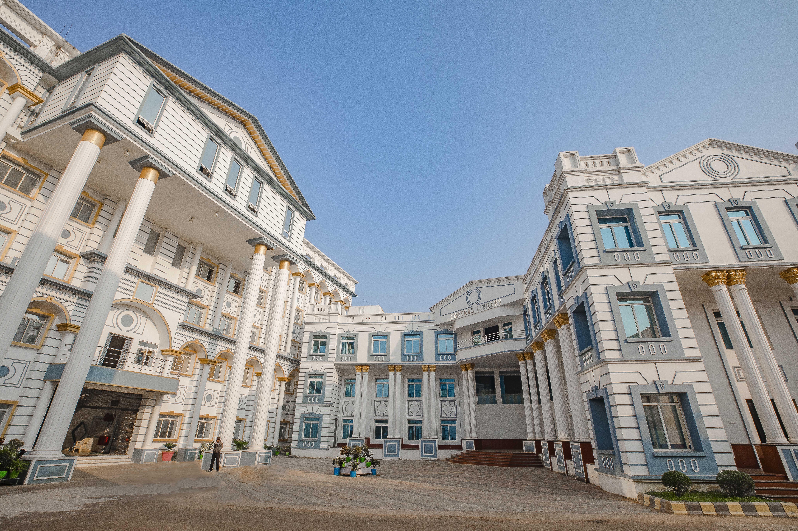

GITA AUTONOMOUS COLLEGE
Welcome to the Department of Computer Science And Engineering (Artificial Intelligence and Machine Learning) The tech industry is vast and ever-evolving, opening doors to a wide range of career paths. From software engineering and cybersecurity to data analytics and artificial intelligence, our students are prepared to thrive in numerous roles such as software developers, cybersecurity professionals, data analysts, AI engineers, and beyond.
Programs Offered
1.BTech
2.MTech
3.PhD

Departments
- Computer science and Engineering
- Computer science and engineering (DS)
- Computer science and engineering (AIML)
- Computer science and engineering (CS)
- Computer science and engineering (CSIT)
- Mechanical Engineering
- Civil Engineering
- Electrical and Electronics Engineering
- Electrical Engineering
Subject Name
- Computer Science Engineering
- Internet and Web Technology
- Engineering Math-3
- Python
- Electrical and Electronics Enggineering
- Electical Circuit Analysis
- Electrical Machines-1
- Analog Electronics
- Mechanical Engineering
- Engineering Thermodynamics
- Fluid Mechanics
- Machine Drawing
Departments Descriptionss
-
Computer Science Engineering
-
The Computer Science & Engineering (CSE) department at GITA offers B.Tech, M.Tech, and Ph.D. programs, focusing on software, hardware, AI, Machine Learning, cybersecurity, cloud computing, and other modern technologies.
It provides excellent infrastructure, advanced laboratories, high-speed internet, and experienced faculty to help students develop industry-ready technical and problem-solving skills.
Established in 2004, the department has a strong placement record, preparing students for careers in software development, data analysis, networking, entrepreneurship, and top multinational companies.
-
Civil Engineering
-
The Civil Engineering Department at GITA Autonomous College offers B.Tech, M.Tech, and Ph.D. programs, focusing on strong technical knowledge, practical skills, research, and industry-oriented learning.
With modern laboratories, experienced faculty, excellent placements, and consultancy opportunities, the department prepares students for careers in construction, infrastructure, software, government jobs, higher studies, and entrepreneurship.
-
Mechanical Engineering
-
The Mechanical Engineering Department at GITA offers B.Tech and M.Tech programs in Defense Technology, Thermal Engineering, and Production Engineering, with a strong focus on quality education and industry relevance.
Established in 2005, the department has grown with excellent infrastructure and academic facilities, preparing students for successful careers in core engineering and related industries.
-
Elecrical and Electronics Engineering
-
The Electrical Engineering Department offers a strong curriculum in power systems, power electronics, control systems, and electrical machines, combining theoretical knowledge with hands-on learning and research.
With modern laboratories, experienced faculty, industry collaborations, and internship opportunities, the department prepares students for successful careers in industry, research, and innovation.
It also promotes sustainability, inclusivity, and technological advancement, empowering students to solve real-world engineering challenges and contribute to a smarter future.